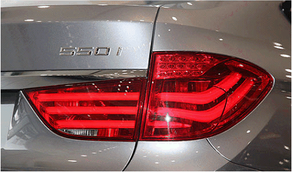

導光元件設計與製造
研究概述
現有光學元件以平面顯示器之導光板、LED於車用警示照明的應用、手機LED閃光燈鏡片等為應用載具。在導光板製程開發方面，結合矽基蝕刻與LIGA-like製程電鑄，製作微射出與熱壓印之薄板取代(Stamper)，應用於模仁製作。
並結合光學模擬分析軟體(TracePro)，分析微特徵設計與分佈，使其具有軸向集光的特性，可免除增亮膜的使用，應用於LCD整合式導光板設計與製作，以期達到超薄、均齊與高輝度的背光模組開發。並將LED側入光的導光技術延伸至彎曲導光棒的設計，應用於車用照明如LED側入光導光條應用於尾燈的開發。並分析LED手機閃光燈所用之菲涅爾透鏡之設計，以提升其照明效率。
主要研究方向
A. 整合式導光板設計與特徵分佈最佳化
- 以矽基蝕刻微電鑄所製作的45°轉向截頂角錐狀特徵，具有軸向特性，可減少使用光學稜鏡膜片，提高正面亮度，達到背光模組的薄形化與降低成本。
- 採用TracePro進行導光板光學模擬，分析微特徵間距對導光板輝度與均齊度的影響，並提出模糊最佳化進行特徵分布，以提升輝度與均齊性。
- 進行導光板成形試製，驗證設計與製程的可行性。
技術特色
- 45°轉向截頂角錐狀特徵：具有軸向集光特性
- TracePro光學模擬：精確分析光學性能
- 模糊最佳化：提升輝度與均齊性
- 薄形化設計：減少增亮膜使用，降低成本
整合式導光板光學設計
微特徵分佈最佳化分析
B. 新型精微模仁薄板取代製程
- 以非等向性蝕刻矽基板為微電鑄中介層，利用矽晶圓[111]面蝕刻停止的特性與深度蝕刻終止層設計，製作具高重複性與高精度的梯形微結構的電鑄起始層，以沉積金屬模仁薄板取代。
- 已成功的翻製出鎳基5μm V形溝槽與截頂角錐。
- 已成功射出3.5吋0.8mm導光板進行輝度均勻性量測。
製程優勢
- 高精度：利用矽晶圓[111]面蝕刻停止特性
- 高重複性：深度蝕刻終止層設計
- 微結構製作：5μm V形溝槽與截頂角錐
- 量產驗證：3.5吋導光板輝度均勻性測試
矽基蝕刻微電鑄製程

鎳基微結構製作成果
C. LED側入光導光條尾燈的設計
- 大部分的車廠以LED取代傳統白熾燈做為車輛方向指示與尾燈設計，但傳統直下式LED車尾指向性強，造成後方汽車駕駛人的視線不良。且大面積的照明需LED數量多。
- 導光條應用於車尾燈與晝行燈設計可提供柔合光線與造型。
- 研究導光設計與特徵參數設計對出光角度的影響。
- 尾燈設計符合美國國家標準SAE規範。
應用優勢
- 柔合光線：解決傳統LED指向性強的問題
- 造型美觀：提供更好的外觀設計選擇
- 節能高效：減少LED使用數量
- 標準符合：符合SAE國際標準

LED導光條尾燈設計
導光條光學分析與測試
D. LED波形照明燈具的設計與開發
- 利用曲面導光板曲率及微結構設計達到蝠翼形的配光曲線。
- 跳脫平板導光元件刻板的外型，增添外觀設計美學與照明產品應用的創新性。
- 進行波形導光板的V-cut特徵設計與幾何參數設計，達到照度最佳化的要求。
創新特色
- 蝠翼形配光：曲面導光板設計
- 外觀美學：突破傳統平板設計
- V-cut特徵：幾何參數最佳化
- 照度最佳化：滿足照明需求
相關研究計畫
-
創新導光板模仁製程開發與一體化微特徵分佈研究
NSC 96-98 -
超薄高輝度之背光模組的製程技術研發
經濟部學界科專計畫 98-99 -
LED導光棒式尾燈設計與分布最佳化
產學合作計畫 100 -
LED側入光曲面導光條於車用照明元件的設計研究與應用
NSC 101,102 -
LED組合式導光元件於指示照明的光學設計與應用
MOST 103 -
創新波形導光板於室內照明之光學設計與應用
MOST 104 -
高對比單側出光導光板的光學設計與應用
MOST 108